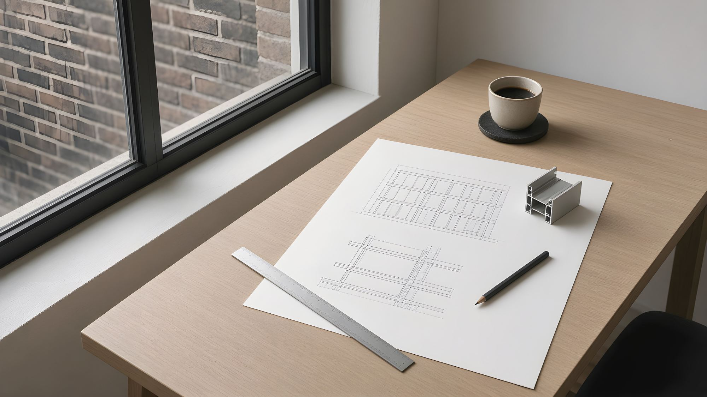

Dane techniczne, ocena rysunków i panel projektu dla architektów.
Potrzebujesz liczb, detali i kogoś, kto odpowiada za styk z budynkiem, a nie broszury. Wyślij rysunek, zestawienie stolarki albo szkic. Dostaniesz uwagi na rysunkach i rekomendację systemu. Cenę podamy w indywidualnej wycenie.
- OceniamyPDF · DWG · XLSX
- Cenaindywidualna wycena

Co robimy dla architektów
Każda usługa ma jasny wynik.
Ocena rysunków i zestawień
Wyślij rzuty, elewacje albo zestawienie stolarki (PDF, DWG lub XLSX). Dostaniesz uwagi o wymiarach i wagach skrzydeł, wymaganiach części L, K, M, O i Q przepisów, stykach z konstrukcją i progami. Cenę podamy w indywidualnej wycenie.
Wycena
Indywidualna wycena według Twojego zestawienia, ze specyfikacją każdej pozycji wypisaną w wycenie.
Odpowiedzi techniczne
Pytania o wymiary, wagi, progi albo wymagania przepisów budowlanych. Zadajesz je w wątku projektu i tam odpowiadamy.
Panel projektu na żywo
Każdy projekt ma w Twoim panelu własną stronę. Widzisz, na jakim jest etapie, kto ma teraz piłkę, kiedy wypada następna aktualizacja, oraz każdy dokument i decyzję, od pierwszego rysunku do odbioru.
12 etapów, zawsze aktualnych
Od przyjęcia i oceny technicznej, przez wycenę, pomiar i rysunki warsztatowe, po produkcję, montaż i odbiór. Przy każdym etapie widać, na kogo czeka.
Zatwierdzanie online
Zatwierdzasz wyceny i rysunki warsztatowe jednym kliknięciem albo prosisz o zmiany z komentarzem. Każda decyzja ma datę i godzinę, więc masz zapis dla klienta i dokumentacji budynku.
Pytania na piśmie
O detal, wymiar czy datę pytasz w wątku projektu. Odpowiadamy właśnie tam, więc nic nie ginie w czyjejś skrzynce.
Wiesz od razu, gdy coś się zmienia
E-mail i powiadomienie w panelu, gdy zmienia się etap, przychodzi dokument, potrzebna jest akceptacja albo ktoś odpowiada. Sam decydujesz, ile e-maili dostajesz.
Czego każda część brytyjskich przepisów wymaga od stolarki.
Skrócony przegląd dla Anglii. Dla Twojego projektu dostarczamy dane do każdego punktu. Zawsze sprawdź aktualne wydanie i wymagania lokalne.
| Część | Co oznacza dla drzwi i okien | Co dostarczamy |
|---|---|---|
| L — Oszczędność energii | Graniczne U: 1,4 W/m²K dla nowych lub wymienianych elementów w istniejących domach, 1,6 w nowych budynkach. W dobudowach przeszklenie powyżej 25% powierzchni (plus usuniętych otworów) oznacza obliczenia SAP. | Certyfikowane Uw dla rzeczywistych wymiarów oraz Ug, g i dane ramy do SAP. |
| O — Przegrzewanie | Nowe mieszkania: ograniczenie zysków słonecznych i wentylacja. Typowym ryzykiem są duże przeszklenia od południa i zachodu. | Współczynniki g szyb przeciwsłonecznych, powierzchnie otwieralne i dane ograniczników. |
| K — Ochrona przed upadkiem i uderzeniem | Szkło bezpieczne w miejscach krytycznych, w tym w drzwiach i doświetlach przy posadzce. Barierki przy niskich parapetach. | Klasyfikacja szkła hartowanego lub laminowanego dla każdej tafli. |
| M — Dostępność | Dostępne progi w nowych mieszkaniach: łączna wysokość progu nie więcej niż 15 mm. | Detale progu bez stopnia i do 15 mm. |
| Q — Bezpieczeństwo | Drzwi i łatwo dostępne okna w nowych mieszkaniach muszą spełniać wymagania bezpieczeństwa z Approved Document Q. | Uwagi do części Q przy ocenie rysunków. |
| F — Wentylacja | Wentylacja podstawowa pomieszczeń mieszkalnych. Drzwi przesuwne rzadko mają nawiewniki, więc trzeba ją zaplanować gdzie indziej. | Dane powierzchni równoważnej nawiewników w oknach. |
Tylko skrót, nie zastępuje Approved Documents. Źródło: Approved Documents, GOV.UK (Open Government Licence v3.0).
Zmiany uzgadniane w wątku projektu
Optymalizacja kosztów nie powinna odbywać się za Twoimi plecami. Tak postępujemy ze zmianami:
Specyfikacja w wycenie
Profile, szkło, okucia i wykończenia są wypisane w wycenie.
Zmiany w wątku projektu
O zmianę prosisz w panelu klienta, a decyzja zostaje tam zapisana, zanim cokolwiek zamówimy.
Zapis, który zostaje u Ciebie
Przy odbiorze dostajesz rejestr specyfikacji powykonawczej i deklaracje właściwości użytkowych, gotowe do dokumentacji projektu.